JEE Main 2023 (Session 2), 11 Apr Shift 2: worked solutions for review
Questions and options are NTA’s own images; the green option is NTA’s final key. Every solution below was written by Claude
and checked against NTA’s final key. It is not NTA’s solution. Please mark anything unclear or wrong.
Q1 · Mathematics · MCQ · ID 7155054042
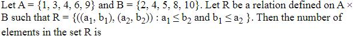
Hint 1: The two conditions are independent: a1 ≤ b2 and b1 ≤ a2.
Hint 2: Count pairs (a, b) with a ≤ b, and pairs (b, a) with b ≤ a.
What this tests: Counting elements of a relation
1. a ≤ b: 5 + 4 + 4 + 2 + 1 = 16.
2. b ≤ a: 4 + 3 + 2 + 1 + 0 = 10.
3. 16 × 10 = 160.
Answer: (3)
If this felt hard: Revise Relations and Functions.
Claude’s answer: 3 · NTA final key: 3 · agrees · Answer recomputed by script (tools/verify_pyq_solutions.py)
Q2 · Mathematics · MCQ · ID 7155054043
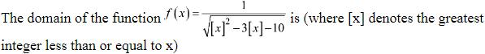
Hint 1: The expression under the root must be positive. Treat [x] as a variable t.
Hint 2: t2 − 3t − 10 = (t − 5)(t + 2) > 0.
What this tests: Domain with greatest integer
1. [x] > 5 or [x] < −2.
2. x ≥ 6 or x < −2.
Answer: (1)
If this felt hard: Revise Relations and Functions.
Claude’s answer: 1 · NTA final key: 1 · agrees · Answer recomputed by script (tools/verify_pyq_solutions.py)
Q3 · Mathematics · MCQ · ID 7155054044
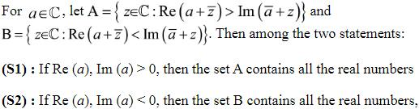
(4) 
Hint 1: Write a = p + iq, z = x + iy and simplify Re(a + z̄) and Im(ā + z).
Hint 2: Re(a + z̄) = p + x, Im(ā + z) = y − q.
What this tests: Regions in the complex plane
1. For real z (y = 0), A needs x > −(p + q): not all reals. S1 false.
2. B needs x < −(p + q): not all reals. S2 false.
Answer: (2)
If this felt hard: Revise Complex Numbers.
Claude’s answer: 2 · NTA final key: 2 · agrees · Answer recomputed by script (tools/verify_pyq_solutions.py)
Q4 · Mathematics · MCQ · ID 7155054045
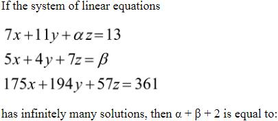
(1) 
(2) 
(3) 
(4) 
Hint 1: Infinitely many solutions: the third equation is a combination of the first two.
Hint 2: 175 = 7m + 5n and 194 = 11m + 4n.
What this tests: Consistency of linear systems
1. m = 10, n = 21.
2. z: 10α + 147 = 57, α = −9. Constants: 130 + 21β = 361, β = 11.
3. α + β + 2 = 4.
Answer: (2)
If this felt hard: Revise Determinants.
Claude’s answer: 2 · NTA final key: 2 · agrees · Answer recomputed with SymPy (tools/verify_pyq_solutions.py)
Q5 · Mathematics · MCQ · ID 7155054046
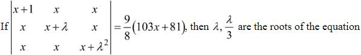
Hint 1: The identity holds for all x. Put x = 0.
Hint 2: At x = 0 the determinant is λ3.
What this tests: Determinant identities
1. λ3 = (9/8) × 81 = 729/8, λ = 9/2; λ/3 = 3/2.
2. Sum 6, product 27/4: 4x2 − 24x + 27 = 0.
Answer: (4)
If this felt hard: Revise Determinants.
Claude’s answer: 4 · NTA final key: 4 · agrees · Answer recomputed with SymPy (tools/verify_pyq_solutions.py)
Q6 · Mathematics · MCQ · ID 7155054047
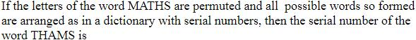
Hint 1: Letters in order: A, H, M, S, T.
Hint 2: Words starting with A, H, M, S: 4 × 4!.
What this tests: Rank in the dictionary
1. 96 words before T.
2. TA _ _ _: 3! = 6.
3. TH: A, M, S in order gives THAMS first: 96 + 6 + 1 = 103.
Answer: (3)
If this felt hard: Revise Permutations and Combinations.
Claude’s answer: 3 · NTA final key: 3 · agrees · Answer recomputed by script (tools/verify_pyq_solutions.py)
Q7 · Mathematics · ID 7155054048
Left out of the bank: dropped (NTA).
Q8 · Mathematics · MCQ · ID 7155054049
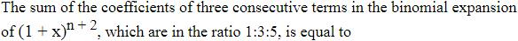
(1) 
(3) 
(4) 
Hint 1: Use C(N, r)/C(N, r − 1) = (N − r + 1)/r with N = n + 2.
Hint 2: Ratios 1 : 3 and 3 : 5.
What this tests: Binomial coefficients
1. n + 3 = 4r and 8r = 3n + 1 give r = 2, n = 5.
2. N = 7: 7 + 21 + 35 = 63.
Answer: (3)
If this felt hard: Revise Binomial Theorem.
Claude’s answer: 3 · NTA final key: 3 · agrees · Answer recomputed with SymPy (tools/verify_pyq_solutions.py)
Q9 · Mathematics · MCQ · ID 7155054050
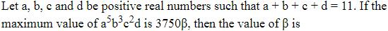
(2) 
(4) 
Hint 1: Split a into 5 equal parts, b into 3, c into 2. Then use AM ≥ GM.
Hint 2: a/5 = b/3 = c/2 = d at the maximum.
What this tests: AM–GM inequality
1. 11 parts summing to 11: each is 1, so a = 5, b = 3, c = 2, d = 1.
2. Max = 55 × 33 × 22 = 337500 = 3750 × 90.
Answer: (2)
If this felt hard: Revise Sequences and Series (AM–GM).
Claude’s answer: 2 · NTA final key: 2 · agrees · Answer recomputed with SymPy (tools/verify_pyq_solutions.py)
Q10 · Mathematics · MCQ · ID 7155054051
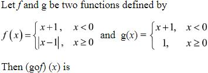
Hint 1: Find g(f(x)) on each piece. When is f(x) negative?
Hint 2: f(x) < 0 only for x < −1.
What this tests: Composite functions
1. g(f(x)) = x + 2 for x < −1 and 1 for x ≥ −1.
2. Continuous at −1, but slopes 1 and 0: not differentiable only at x = −1.
Answer: (4)
If this felt hard: Revise Continuity and Differentiability.
Claude’s answer: 4 · NTA final key: 4 · agrees · Answer recomputed by script (tools/verify_pyq_solutions.py)
Q11 · Mathematics · MCQ · ID 7155054052
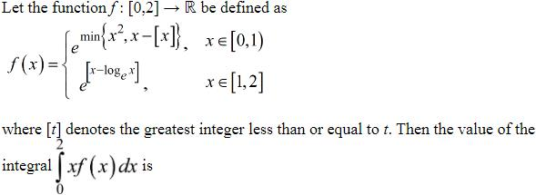
Hint 1: On [0, 1), compare x2 with x. On [1, 2], what is [x − ln x]?
Hint 2: x2 ≤ x on [0, 1); 1 ≤ x − ln x < 2 on [1, 2].
What this tests: Definite integrals of piecewise functions
1. ∫01 x ex^{2} dx = (e − 1)/2.
2. ∫12 e x dx = 3e/2.
3. Total 2e − 1/2.
Answer: (3)
If this felt hard: Revise Definite Integrals.
Claude’s answer: 3 · NTA final key: 3 · agrees · Answer recomputed with SymPy (tools/verify_pyq_solutions.py)
Q12 · Mathematics · MCQ · ID 7155054053
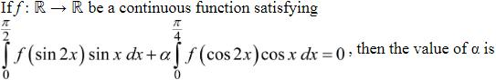
Hint 1: Use x → π/4 − x in the second integral.
Hint 2: cos 2x → sin 2x and cos x → (cos x + sin x)/√2.
What this tests: Properties of definite integrals
1. First integral I = ∫0π/4 f(sin 2x)(sin x + cos x) dx (by symmetry about π/4).
2. Second = I/√2.
3. I + αI/√2 = 0: α = −√2.
Answer: (1)
If this felt hard: Revise Definite Integrals.
Claude’s answer: 1 · NTA final key: 1 · agrees · Answer recomputed with SymPy (tools/verify_pyq_solutions.py)
Q13 · Mathematics · MCQ · ID 7155054054
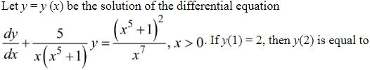
Hint 1: Find the integrating factor first.
Hint 2: IF = e∫5/(x(x^{5 + 1))dx} = x5/(x5 + 1).
What this tests: Linear differential equations
1. y x5/(x5 + 1) = ∫(x5 + 1)/x2 dx = x4/4 − 1/x + C.
2. y(1) = 2 gives C = 7/4.
3. y(2) × 32/33 = 21/4, so y(2) = 693/128.
Answer: (3)
If this felt hard: Revise Differential Equations.
Claude’s answer: 3 · NTA final key: 3 · agrees · Answer recomputed with SymPy (tools/verify_pyq_solutions.py)
Q14 · Mathematics · MCQ · ID 7155054055
(1) 
(2) 
(3)
(4)
Hint 1: The largest circle touches the ellipse at its nearest point to (2, 0).
Hint 2: Distance2 to (6cos t, 3sin t) = 27cos2t − 24cos t + 13.
What this tests: Circle inside an ellipse
1. Minimum at cos t = 4/9: 23/3.
2. r2 = 23/3; 12r2 = 92.
Answer: (3)
If this felt hard: Revise Conic Sections.
Claude’s answer: 3 · NTA final key: 3 · agrees · Answer recomputed with SymPy (tools/verify_pyq_solutions.py)
Q15 · Mathematics · MCQ · ID 7155054056
(1) 
(2) 
(3)
(4) 
Hint 1: Find the plane's normal from two edge vectors.
Hint 2: Normal ∝ (3, −4, 12), plane 3x − 4y + 12z = 3.
What this tests: Distance from a plane
1. A: |12α − 10| = 26 gives α = 3 (natural).
2. B(2, 3, a): |12a − 9| = 39 gives a = 4 (positive).
Answer: (2)
If this felt hard: Revise Three Dimensional Geometry.
Claude’s answer: 2 · NTA final key: 2 · agrees · Answer recomputed with SymPy (tools/verify_pyq_solutions.py)
Q16 · Mathematics · MCQ · ID 7155054057
(1) 
(2)
(3)
(4)
Hint 1: Find R first, then move from R parallel to the given line until you hit the second plane.
Hint 2: R = (−1, −5, 0). Points R + s(2, 2, 1).
What this tests: Distance along a line
1. In x + 2y + 3z + 2 = 0: 9s − 9 = 0, s = 1.
2. Distance = |(2, 2, 1)| = 3.
Answer: (1)
If this felt hard: Revise Three Dimensional Geometry.
Claude’s answer: 1 · NTA final key: 1 · agrees · Answer recomputed with SymPy (tools/verify_pyq_solutions.py)
Q17 · Mathematics · MCQ · ID 7155054058
(1)
(2)
(3)
(4)
Hint 1: Coplanar points: [b − a, c − a, d − a] = 0. Expand it.
Hint 2: Terms with two a's vanish.
What this tests: Scalar triple product
1. [b c d] − [b c a] − [b a d] − [a c d] = 0.
2. [a b c] = [b c d] + [a b d] + [c a d] = [c d b] + [b d a] + [d c a].
Answer: (2)
If this felt hard: Revise Vector Algebra.
Claude’s answer: 2 · NTA final key: 2 · agrees · Answer recomputed with SymPy (tools/verify_pyq_solutions.py)
Q18 · Mathematics · MCQ · ID 7155054059
(1)
(2)
(3) 
(4)
Hint 1: Use the mean and variance to find x and y.
Hint 2: x + y = 18 and x2 + y2 = 164.
What this tests: Mean deviation
1. x, y = 8, 10.
2. Deviations from 5: 4, 3, 1, 0, 3, 5; sum 16.
3. MD = 16/6 = 8/3.
Answer: (2)
If this felt hard: Revise Statistics.
Claude’s answer: 2 · NTA final key: 2 · agrees · Answer recomputed with SymPy (tools/verify_pyq_solutions.py)
Q19 · Mathematics · MCQ · ID 7155054060
(1) 
(2)
(3)
(4) 
Hint 1: Find each person's distance from the foot of the tower.
Hint 2: South: 5 cot 45° = 5. West: 5 cot 30° = 5√3.
What this tests: Heights and distances
1. The two directions are perpendicular.
2. Distance = √(25 + 75) = 10 m.
Answer: (4)
If this felt hard: Revise Trigonometric Functions.
Claude’s answer: 4 · NTA final key: 4 · agrees · Answer recomputed by script (tools/verify_pyq_solutions.py)
Q20 · Mathematics · MCQ · ID 7155054061
(1)
(2)
(3)
(4)
Hint 1: Converse of p ⇒ q is q ⇒ p.
Hint 2: Converse: r ⇒ (∼p ∧ q); its contrapositive is equivalent.
What this tests: Converse and contrapositive
1. r ⇒ (∼p ∧ q) ≡ ∼(∼p ∧ q) ⇒ ∼r ≡ (p ∨ ∼q) ⇒ ∼r.
Answer: (1)
If this felt hard: Revise Mathematical Reasoning.
Claude’s answer: 1 · NTA final key: 1 · agrees · Answer recomputed by script (tools/verify_pyq_solutions.py)
Note: Mathematical reasoning is no longer in the JEE Main syllabus.
Q21 · Mathematics · Numerical · ID 7155054062
Hint 1: Factorise: z2 + 8iz − 15 = (z + 3i)(z + 5i) and z2 − 3iz − 2 = (z − i)(z − 2i).
Hint 2: Put z = α − 13i/11 and set the imaginary part of the quotient to 0.
What this tests: Real quotients of complex numbers
1. The imaginary part vanishes for α2 = 840/121 (α ≠ 0).
2. 242α2 = 1680.
Answer: 1680
If this felt hard: Revise Complex Numbers.
Claude’s answer: 1680 · NTA final key: 1680 · agrees · Answer recomputed with SymPy (tools/verify_pyq_solutions.py)
Q22 · Mathematics · Numerical · ID 7155054063
Hint 1: f(4) = f(1) + f(2) + 1 must be at most 6.
Hint 2: Count pairs (f(1), f(2)) with sum ≤ 5.
What this tests: Counting functions
1. Pairs: 4 + 3 + 2 + 1 = 10.
2. f(3) and f(5) are free: 36.
3. 360.
Answer: 360
If this felt hard: Revise Relations and Functions.
Claude’s answer: 360 · NTA final key: 360 · agrees · Answer recomputed by script (tools/verify_pyq_solutions.py)
Q23 · Mathematics · Numerical · ID 7155054064
Hint 1: Differences 3, 4, 5, 6: the nth term (from 0) is (n2 + 5n + 2)/2.
Hint 2: Sum Σ anxn with x = 1/k.
What this tests: Series with quadratic terms
1. Sum = k(k2 + k − 1)/(k − 1)3.
2. = 10 gives k = 2.
Answer: 2
If this felt hard: Revise Sequences and Series.
Claude’s answer: 2 · NTA final key: 2 · agrees · Answer recomputed with SymPy (tools/verify_pyq_solutions.py)
Q24 · Mathematics · Numerical · ID 7155054065
Hint 1: Put t = e2x > 0 and divide by t2.
Hint 2: u = t + 1/t: u2 − u − 5 = 0.
What this tests: Reciprocal equations
1. u = (1 + √21)/2 ≈ 2.79 (≥ 2), the other root is negative.
2. Two positive t, so two points.
Answer: 2
If this felt hard: Revise Quadratic Equations.
Claude’s answer: 2 · NTA final key: 2 · agrees · Answer recomputed with SymPy (tools/verify_pyq_solutions.py)
Q25 · Mathematics · Numerical · ID 7155054066
Hint 1: Find the tangent at (1, 3) and where the three curves meet.
Hint 2: Tangent y = 4x − 1; x + y = 1 meets the curve at (0, 1) and the tangent at (2/5, 3/5).
What this tests: Area with a tangent
1. A = ∫01(2x2 + 1) dx − ∫02/5(1 − x) dx − ∫2/51(4x − 1) dx.
2. = 5/3 − 0.32 − 1.08 = 4/15.
3. 60A = 16.
Answer: 16
If this felt hard: Revise Application of Integrals.
Claude’s answer: 16 · NTA final key: 16 · agrees · Answer recomputed with SymPy (tools/verify_pyq_solutions.py)
Q26 · Mathematics · Numerical · ID 7155054067
Hint 1: l3 is the mirror image of l2 in l1.
Hint 2: l1, l2 meet at (0, 1). Reflect another point of l2, e.g. (−1, 0).
What this tests: Angle bisectors and reflection
1. Image of (−1, 0) in 2x − 3y + 3 = 0: (−17/13, 6/13).
2. l3: 7x − 17y + 17 = 0, so α = 7, β = −17.
3. 49 + 289 − 7 + 17 = 348.
Answer: 348
If this felt hard: Revise Straight Lines.
Claude’s answer: 348 · NTA final key: 348 · agrees · Answer recomputed with SymPy (tools/verify_pyq_solutions.py)
Q27 · Mathematics · Numerical · ID 7155054068
Hint 1: Slope of the tangent to y2 = 12x at (3, α) is 6/α.
Hint 2: Perpendicular to slope −1 means slope 1, so α = 6.
What this tests: Normals to a hyperbola
1. Hyperbola 36x2 − 9y2 = 324 at (5, 8).
2. Normal: 9x/5 + 36y/8 = 45, i.e. 2x + 5y = 50.
3. Distance2 from (6, −4) = 582/29 = 116.
Answer: 116
If this felt hard: Revise Conic Sections.
Claude’s answer: 116 · NTA final key: 116 · agrees · Answer recomputed with SymPy (tools/verify_pyq_solutions.py)
Q28 · Mathematics · Numerical · ID 7155054069
Hint 1: Line direction (1, 2, λ) through (0, 1, 3). The line–plane angle uses sine.
Hint 2: cos φ = √(5/14), so sin φ = 3/√14.
What this tests: Line and plane
1. |5 + 3λ| = 3√(5 + λ2) gives λ = 2/3.
2. Meeting point (−1, −1, 7/3).
3. α + 2β + 6γ = −1 − 2 + 14 = 11.
Answer: 11
If this felt hard: Revise Three Dimensional Geometry.
Claude’s answer: 11 · NTA final key: 11 · agrees · Answer recomputed with SymPy (tools/verify_pyq_solutions.py)
Q29 · Mathematics · Numerical · ID 7155054070
Hint 1: b·(a × c) = c·(b × a). Write three linear equations for c.
Hint 2: a·c = 11, (b × a)·c = 27, b·c = −3.
What this tests: Vector equations
1. Solving: c = (3, −2, 4).
2. a × c = (14, 5, −8); |a × c|2 = 196 + 25 + 64 = 285.
Answer: 285
If this felt hard: Revise Vector Algebra.
Claude’s answer: 285 · NTA final key: 285 · agrees · Answer recomputed with SymPy (tools/verify_pyq_solutions.py)
Q30 · Mathematics · Numerical · ID 7155054071
Hint 1: No real root: discriminant < 0.
Hint 2: 25N2 < 256, so N ≤ 3.
What this tests: Geometric distribution
1. P = (1/4)(1 + 3/4 + 9/16) = 37/64.
2. q − p = 27.
Answer: 27
If this felt hard: Revise Probability.
Claude’s answer: 27 · NTA final key: 27 · agrees · Answer recomputed by script (tools/verify_pyq_solutions.py)
Q31 · Physics · MCQ · ID 7155054072
(1)
(2)
(3)
(4)
Hint 1: The listener (Q) moves towards the source; the source (P) moves away from Q.
Hint 2: f' = f(v + vo)/(v + vs).
What this tests: Doppler effect
1. f' = 400 × 400/380 ≈ 421 Hz.
Answer: (2)
If this felt hard: Revise Waves.
Claude’s answer: 2 · NTA final key: 2 · agrees · Answer recomputed by script (tools/verify_pyq_solutions.py)
Q32 · Physics · MCQ · ID 7155054073
(1)
(2)
(3)
(4)
Hint 1: Topic: RMS speed. Which rule or fact from it settles this question?
Hint 2: vrms = √(3kT/m).
What this tests: RMS speed
1. √(3 × 1.4 × 10−23 × 300/4.6 × 10−26) ≈ 523 m/s.
Answer: (3)
If this felt hard: Revise Kinetic Theory.
Claude’s answer: 3 · NTA final key: 3 · agrees · Answer recomputed by script (tools/verify_pyq_solutions.py)
Q33 · Physics · MCQ · ID 7155054074
(1)
(2)
(3)
(4)
Hint 1: Topic: Escape velocity. Which rule or fact from it settles this question?
Hint 2: Compare orbital speed √(gR) with escape speed √(2gR).
What this tests: Escape velocity
1. √(gR) = 8 km/s; extra = 8(√2 − 1) km/s.
Answer: (3)
If this felt hard: Revise Gravitation.
Claude’s answer: 3 · NTA final key: 3 · agrees · Answer recomputed by script (tools/verify_pyq_solutions.py)
Q34 · Physics · MCQ · ID 7155054075
(1)
(2)
(3)
(4)
Hint 1: Topic: Thermodynamic processes. Which rule or fact from it settles this question?
Hint 2: For an ideal gas U depends only on T.
What this tests: Thermodynamic processes
1. Isothermal.
Answer: (4)
If this felt hard: Revise Thermodynamics.
Claude’s answer: 4 · NTA final key: 4 · agrees · Theory question: not computable, needs a teacher’s review
Q35 · Physics · MCQ · ID 7155054076
(1)
(2)
(3)
(4)
Hint 1: Topic: Acceleration from v(x). Which rule or fact from it settles this question?
Hint 2: a = v dv/dx.
What this tests: Acceleration from v(x)
1. a = 10√x × 5/√x = 50 m/s2.
2. F = 0.5 × 50 = 25 N.
Answer: (2)
If this felt hard: Revise Motion in a Straight Line.
Claude’s answer: 2 · NTA final key: 2 · agrees · Answer recomputed by script (tools/verify_pyq_solutions.py)
Q36 · Physics · MCQ · ID 7155054077
(1)
(2)
(3)
(4)
Hint 1: Terminal speed ∝ r2.
Hint 2: 8 drops make one drop of radius 2r.
What this tests: Terminal velocity
1. v = 4 × 10 = 40 cm/s.
Answer: (4)
If this felt hard: Revise Mechanical Properties of Fluids.
Claude’s answer: 4 · NTA final key: 4 · agrees · Answer recomputed by script (tools/verify_pyq_solutions.py)
Q37 · Physics · MCQ · ID 7155054078
(1)
(2)
(3)
(4)
Hint 1: Potential inside a uniform sphere.
Hint 2: V(r) = −GM(3R2 − r2)/(2R3).
What this tests: Gravitational potential
1. At the centre V = (3/2) × surface value.
Answer: (3)
If this felt hard: Revise Gravitation.
Claude’s answer: 3 · NTA final key: 3 · agrees · Theory question: not computable, needs a teacher’s review
Q38 · Physics · ID 7155054079
Left out of the bank: dropped (NTA).
Q39 · Physics · MCQ · ID 7155054080
(1) 
(2)
(3)
(4)
Hint 1: Split into components.
Hint 2: vx = 20√3, vy = 20 − 10t.
What this tests: Projectile velocity
1. At t = 2 s, vy = 0, so v = 20√3 m/s.
Answer: (2)
If this felt hard: Revise Motion in a Plane.
Claude’s answer: 2 · NTA final key: 2 · agrees · Answer recomputed by script (tools/verify_pyq_solutions.py)
Q40 · Physics · MCQ · ID 7155054081
(1)
(2)
(3)
(4)
Hint 1: Write M and L in terms of F, V, T.
Hint 2: L = VT, M = FT/V.
What this tests: Dimensional analysis
1. Density = M/L3 = FT V−1/(V3T3) = FV−4T−2.
Answer: (3)
If this felt hard: Revise Units and Measurements.
Claude’s answer: 3 · NTA final key: 3 · agrees · Answer recomputed by script (tools/verify_pyq_solutions.py)
Q41 · Physics · MCQ · ID 7155054082
(1)
(2)
(3)
(4)
Hint 1: Topic: Satellite communication. Which rule or fact from it settles this question?
Hint 2: Recall the satellite communication bands.
What this tests: Satellite communication
1. Uplink: 5.925–6.425 GHz.
Answer: (4)
If this felt hard: Revise Communication Systems.
Claude’s answer: 4 · NTA final key: 4 · agrees · Theory question: not computable, needs a teacher’s review
Note: Communication systems is no longer in the JEE Main syllabus.
Q42 · Physics · MCQ · ID 7155054083
(1) 
(2) 
(3)
(4) 
Hint 1: Topic: Logic gates. Which rule or fact from it settles this question?
Hint 2: Two AND gates feed a NAND, followed by a NOT.
What this tests: Logic gates
1. NOT(NAND(AB, AB)) = AB: AND.
Answer: (1)
If this felt hard: Revise Semiconductor Electronics.
Claude’s answer: 1 · NTA final key: 1 · agrees · Theory question: not computable, needs a teacher’s review
Note: Figure reading: both AND gates take A and B.
Q43 · Physics · MCQ · ID 7155054084
(1)
(2)
(3)
(4)
Hint 1: Topic: Reflection. Which rule or fact from it settles this question?
Hint 2: Deviation on reflection = 180° − 2i.
What this tests: Reflection
1. 180 − 60 = 120°.
Answer: (2)
If this felt hard: Revise Ray Optics.
Claude’s answer: 2 · NTA final key: 2 · agrees · Answer recomputed by script (tools/verify_pyq_solutions.py)
Q44 · Physics · MCQ · ID 7155054085
(1)
(2)
(3)
(4)
Hint 1: Topic: Hydrogen-like ions. Which rule or fact from it settles this question?
Hint 2: En = −13.6 Z2/n2 eV.
What this tests: Hydrogen-like ions
1. He+, n = 2: −13.6 × 4/4 = −13.6 eV.
Answer: (2)
If this felt hard: Revise Atoms.
Claude’s answer: 2 · NTA final key: 2 · agrees · Answer recomputed by script (tools/verify_pyq_solutions.py)
Q45 · Physics · MCQ · ID 7155054086
(1)
(2)
(3)
(4)
Hint 1: Topic: de Broglie wavelength. Which rule or fact from it settles this question?
Hint 2: λ = h/√(2mK).
What this tests: de Broglie wavelength
1. λp/λe = √(me/mp) = 1/43.
Answer: (4)
If this felt hard: Revise Dual Nature of Radiation and Matter.
Claude’s answer: 4 · NTA final key: 4 · agrees · Answer recomputed by script (tools/verify_pyq_solutions.py)
Q46 · Physics · MCQ · ID 7155054087
(1)
(2)
(3)
(4)
Hint 1: Topic: EM wave fields. Which rule or fact from it settles this question?
Hint 2: B = E/c, with E × B along the direction of travel.
What this tests: EM wave fields
1. B = 6.6/3 × 108 = 2.2 × 10−8 T.
2. ĵ × k̂ = î, so B is along +k̂.
Answer: (1)
If this felt hard: Revise Electromagnetic Waves.
Claude’s answer: 1 · NTA final key: 1 · agrees · Theory question: not computable, needs a teacher’s review
Q47 · Physics · MCQ · ID 7155054088
(1) 
(2) 
(3) 
(4) 
Hint 1: Topic: Eddy currents. Which rule or fact from it settles this question?
Hint 2: What opposes the magnet's motion in the pipe?
What this tests: Eddy currents
1. Eddy currents slow the magnet: both true, R explains A.
Answer: (1)
If this felt hard: Revise Electromagnetic Induction.
Claude’s answer: 1 · NTA final key: 1 · agrees · Theory question: not computable, needs a teacher’s review
Q48 · Physics · MCQ · ID 7155054089
(1) 
(2) 
(3) 
(4) 
Hint 1: What is the angle between v and B on the axis?
Hint 2: F = qv × B.
What this tests: Magnetic force
1. v ∥ B: no force, so it keeps moving along the axis.
Answer: (2)
If this felt hard: Revise Moving Charges and Magnetism.
Claude’s answer: 2 · NTA final key: 2 · agrees · Theory question: not computable, needs a teacher’s review
Q49 · Physics · MCQ · ID 7155054090
(1)
(2)
(3)
(4)
Hint 1: The 8 V cell is directly across R6; the rest hangs from E through R5.
Hint 2: C–A: R3 ∥ (R2 + R1) = 3 Ω. D–A: R7 ∥ (R4 + 3) = 2 Ω.
What this tests: Networks
1. From E: 2 + 2 = 4 Ω, current 2 A; VDA = 4 V.
2. Through R4: 4/6 = 2/3 A, which splits equally at C.
3. Through R2: 1/3 A.
Answer: (3)
If this felt hard: Revise Current Electricity.
Claude’s answer: 3 · NTA final key: 3 · agrees · Answer recomputed by script (tools/verify_pyq_solutions.py)
Note: Figure reading: the cell is connected between E and A.
Q50 · Physics · MCQ · ID 7155054091
(1)
(2)
(3)
(4)
Hint 1: Topic: Gauss's law. Which rule or fact from it settles this question?
Hint 2: Gauss's law: flux = enclosed charge/ε0.
What this tests: Gauss's law
1. q = CV: flux = CV/ε0.
Answer: (1)
If this felt hard: Revise Electric Charges and Fields.
Claude’s answer: 1 · NTA final key: 1 · agrees · Theory question: not computable, needs a teacher’s review
Q51 · Physics · Numerical · ID 7155054092
Hint 1: Topic: Vibrating wires. Which rule or fact from it settles this question?
Hint 2: Tension = Y × strain × area; wave speed v = √(T/μ) = √(stress/ρ).
What this tests: Vibrating wires
1. Stress = 8 × 1010 × 3.2 × 10−4/0.5 = 5.12 × 107 Pa.
2. v = √(5.12 × 107/8000) = 80 m/s.
3. f = v/2L = 80 Hz.
Answer: 80
If this felt hard: Revise Waves.
Claude’s answer: 80 · NTA final key: 80 · agrees · Answer recomputed by script (tools/verify_pyq_solutions.py)
Q52 · Physics · Numerical · ID 7155054093
Hint 1: A soap bubble has two surfaces.
Hint 2: W = T × 2 × 4π(R22 − R12).
What this tests: Surface energy
1. W = 3.5 × 10−2 × 8 × (22/7) × 0.03 = 0.0264 J = 264 × 10−4 J.
Answer: 264
If this felt hard: Revise Mechanical Properties of Fluids.
Claude’s answer: 264 · NTA final key: 264 · agrees · Answer recomputed by script (tools/verify_pyq_solutions.py)
Q53 · Physics · Numerical · ID 7155054094
Hint 1: Angular momentum is conserved.
Hint 2: KE = L2/2I.
What this tests: Conservation of angular momentum
1. I triples, so KE becomes E/3.
Answer: 3
If this felt hard: Revise System of Particles and Rotational Motion.
Claude’s answer: 3 · NTA final key: 3 · agrees · Theory question: not computable, needs a teacher’s review
Q54 · Physics · Numerical · ID 7155054095
Hint 1: F − mg sin 30° = ma.
Hint 2: P = Fv.
What this tests: Power
1. F = 5 + 25 = 30 N.
2. v = 10 m/s at 10 s; P = 300 W.
Answer: 300
If this felt hard: Revise Work, Energy and Power.
Claude’s answer: 300 · NTA final key: 300 · agrees · Answer recomputed by script (tools/verify_pyq_solutions.py)
Q55 · Physics · Numerical · ID 7155054096
Hint 1: Radius ratio 1 : 21/3 means mass ratio 1 : 2.
Hint 2: Momentum is conserved.
What this tests: Nuclear size and momentum
1. m1v1 = m2v2: v1/v2 = 2.
Answer: 2
If this felt hard: Revise Nuclei.
Claude’s answer: 2 · NTA final key: 2 · agrees · Theory question: not computable, needs a teacher’s review
Q56 · Physics · Numerical · ID 7155054097
Hint 1: First find where the bulb appears from above the water.
Hint 2: Apparent depth = 8/(4/3) = 6 cm.
What this tests: Apparent depth and mirrors
1. The bulb appears 2 cm above the bottom, 48 cm below the mirror.
2. Image 48 cm above the mirror: 98 cm from the bottom.
Answer: 98
If this felt hard: Revise Ray Optics.
Claude’s answer: 98 · NTA final key: 98 · agrees · Answer recomputed by script (tools/verify_pyq_solutions.py)
Q57 · Physics · Numerical · ID 7155054098
Hint 1: Steady current I = V/R.
Hint 2: U = LI2/2.
What this tests: Energy in an inductor
1. I = 2.5 A; U = 0.5 × 2 × 6.25 = 6.25 J = 625 × 10−2 J.
Answer: 625
If this felt hard: Revise Electromagnetic Induction.
Claude’s answer: 625 · NTA final key: 625 · agrees · Answer recomputed by script (tools/verify_pyq_solutions.py)
Q58 · Physics · Numerical · ID 7155054099
Hint 1: Topic: Motional emf. Which rule or fact from it settles this question?
Hint 2: Motional emf across the cube: Bvl.
What this tests: Motional emf
1. 0.5 × 2 × 0.15 = 0.15 V = 150 mV.
Answer: 150
If this felt hard: Revise Electromagnetic Induction.
Claude’s answer: 150 · NTA final key: 150 · agrees · Answer recomputed by script (tools/verify_pyq_solutions.py)
Q59 · Physics · Numerical · ID 7155054100
Hint 1: Current from the voltmeter reading, then the full loop.
Hint 2: I = 1.5/10.
What this tests: Internal resistance
1. I = 0.15 A; 3 = 0.15(10 + 2r).
2. r = 5 Ω.
Answer: 5
If this felt hard: Revise Current Electricity.
Claude’s answer: 5 · NTA final key: 5 · agrees · Answer recomputed by script (tools/verify_pyq_solutions.py)
Q60 · Physics · Numerical · ID 7155054101
Hint 1: Reduce from the right: C3, C4, C5 are in series, then in parallel with C2.
Hint 2: Series 2, 4, 2 μF = 0.8 μF; with C2: 1 μF.
What this tests: Capacitor networks
1. With C1 and C6 in series: 0.5 μF, Q = 5 μC.
2. 5 V across the 1 μF block; right branch charge 0.8 × 5 = 4 μC.
3. C4 carries 4 μC.
Answer: 4
If this felt hard: Revise Electrostatic Potential and Capacitance.
Claude’s answer: 4 · NTA final key: 4 · agrees · Answer recomputed by script (tools/verify_pyq_solutions.py)
Note: Figure reading: C_{1} and C_{6} in the outer loop, C_{2} in the middle, C_{3}–C_{4}–C_{5} round the right loop.
Q61 · Chemistry · MCQ · ID 7155054102
(1)
(2)
(3)
(4)
Hint 1: Topic: Molecular solids. Which rule or fact from it settles this question?
Hint 2: Polar molecules held by dipole forces.
What this tests: Molecular solids
1. SO2 and NH3.
Answer: (1)
If this felt hard: Revise The Solid State.
Claude’s answer: 1 · NTA final key: 1 · agrees · Theory question: not computable, needs a teacher’s review
Note: Solid state is no longer in the JEE Main syllabus.
Q62 · Chemistry · MCQ · ID 7155054103
(1)
(2)
(3)
(4)
Hint 1: Topic: Raoult's law. Which rule or fact from it settles this question?
Hint 2: Relative lowering = n2/n1 (dilute).
What this tests: Raoult's law
1. n2 = (0.2/54.2) × 100/18 = 0.0205 mol.
2. Mass = 3.69 g.
Answer: (1)
If this felt hard: Revise Solutions.
Claude’s answer: 1 · NTA final key: 1 · agrees · Answer recomputed by script (tools/verify_pyq_solutions.py)
Q63 · Chemistry · MCQ · ID 7155054104
(1)
(2)
(3)
(4)
Hint 1: rate = k[A][B]. Find k from row 1.
Hint 2: k = 0.10/(20 × 0.5) = 0.01.
What this tests: Rate law
1. x = 0.40/(0.01 × 0.5) = 80.
2. y = 0.80/(0.01 × 40) = 2.
Answer: (1)
If this felt hard: Revise Chemical Kinetics.
Claude’s answer: 1 · NTA final key: 1 · agrees · Answer recomputed by script (tools/verify_pyq_solutions.py)
Q64 · Chemistry · MCQ · ID 7155054105
(1)
(2)
(3) 
(4)
Hint 1: Topic: Mass percent. Which rule or fact from it settles this question?
Hint 2: 1 mole of water is 18 g.
What this tests: Mass percent
1. 2/(2 + 18) = 10%.
Answer: (3)
If this felt hard: Revise Some Basic Concepts of Chemistry.
Claude’s answer: 3 · NTA final key: 3 · agrees · Answer recomputed by script (tools/verify_pyq_solutions.py)
Q65 · Chemistry · MCQ · ID 7155054106
(1) 
(2) 
(3) 
(4) 
Hint 1: Topic: Roasting. Which rule or fact from it settles this question?
Hint 2: Why roast a sulphide ore?
What this tests: Roasting
1. Sulphides are roasted to oxides, which are easier to reduce: both correct.
Answer: (1)
If this felt hard: Revise General Principles of Isolation of Elements.
Claude’s answer: 1 · NTA final key: 1 · agrees · Theory question: not computable, needs a teacher’s review
Note: Metallurgy is no longer in the JEE Main syllabus.
Q66 · Chemistry · MCQ · ID 7155054107
(1)
(2)
(3)
(4)
Hint 1: Topic: Hydrides. Which rule or fact from it settles this question?
Hint 2: Which hydride is electron deficient and covalent-polymeric?
What this tests: Hydrides
1. BeH2 is the least stable of these.
Answer: (2)
If this felt hard: Revise Hydrogen.
Claude’s answer: 2 · NTA final key: 2 · agrees · Theory question: not computable, needs a teacher’s review
Note: Teacher look: 'less stable' is not defined; NTA's key is BeH_{2}.
Q67 · Chemistry · MCQ · ID 7155054108
(1)
(2)
(3)
(4)
Hint 1: SOCl2 chlorinates P4.
Hint 2: P4 + 8SOCl2 → 4PCl3 + 4SO2 + 2S2Cl2.
What this tests: Phosphorus chlorides
1. A = PCl3, B = S2Cl2, x = 4.
Answer: (1)
If this felt hard: Revise The p-Block Elements.
Claude’s answer: 1 · NTA final key: 1 · agrees · Theory question: not computable, needs a teacher’s review
Q68 · Chemistry · MCQ · ID 7155054109
(1)
(2)
(3)
(4)
Hint 1: Topic: Alkali metals. Which rule or fact from it settles this question?
Hint 2: Melting points of alkali metals fall down the group.
What this tests: Alkali metals
1. Cs.
Answer: (4)
If this felt hard: Revise The s-Block Elements.
Claude’s answer: 4 · NTA final key: 4 · agrees · Theory question: not computable, needs a teacher’s review
Q69 · Chemistry · MCQ · ID 7155054110
(1)
(2)
(3)
(4)
Hint 1: Fe3+ is d5. H2O weak field, CN− strong field.
Hint 2: μ = √(n(n + 2)).
What this tests: Magnetic moments
1. High spin 5 unpaired: 5.92 BM. Low spin 1 unpaired: 1.73 BM.
Answer: (3)
If this felt hard: Revise Coordination Compounds.
Claude’s answer: 3 · NTA final key: 3 · agrees · Answer recomputed by script (tools/verify_pyq_solutions.py)
Q70 · Chemistry · MCQ · ID 7155054111
(1) 
(2)
(3) 
(4) 
Hint 1: Cl− is a weaker field ligand than H2O.
Hint 2: Smaller Δ means longer wavelength absorbed.
What this tests: Spectrochemical series
1. A false: the chloro complex absorbs at longer wavelength.
2. R true as a general statement.
Answer: (4)
If this felt hard: Revise Coordination Compounds.
Claude’s answer: 4 · NTA final key: 4 · agrees · Theory question: not computable, needs a teacher’s review
Q71 · Chemistry · MCQ · ID 7155054112
(1)
(2)
(3)
(4)
Hint 1: Topic: Freons. Which rule or fact from it settles this question?
Hint 2: Freons are chlorofluorocarbons.
What this tests: Freons
1. C2Cl2F2 is the only CFC here.
Answer: (1)
If this felt hard: Revise Haloalkanes.
Claude’s answer: 1 · NTA final key: 1 · agrees · Theory question: not computable, needs a teacher’s review
Q72 · Chemistry · MCQ · ID 7155054113
(1)
(2)
(3)
(4)
Hint 1: Topic: Geometry of d8 complexes. Which rule or fact from it settles this question?
Hint 2: Ni2+ with halides is tetrahedral; Pt2+ (5d8) is square planar.
What this tests: Geometry of d8 complexes
1. Geometry changes, geometrical isomerism appears (cis/trans), and it becomes diamagnetic.
2. No optical isomerism in either.
Answer: (4)
If this felt hard: Revise Coordination Compounds.
Claude’s answer: 4 · NTA final key: 4 · agrees · Theory question: not computable, needs a teacher’s review
Q73 · Chemistry · MCQ · ID 7155054114
(1) 
(2)
(3) 
(4) 
Hint 1: Topic: Salt analysis colours. Which rule or fact from it settles this question?
Hint 2: Recall precipitate colours.
What this tests: Salt analysis colours
1. Mg(NH4)PO4 white, K3[Co(NO2)6] yellow, MnO(OH)2 brown, Prussian blue.
Answer: (1)
If this felt hard: Revise practical chemistry.
Claude’s answer: 1 · NTA final key: 1 · agrees · Theory question: not computable, needs a teacher’s review
Q74 · Chemistry · MCQ · ID 7155054115
(1)
(2)
(3)
(4)
Hint 1: AgNO3 gives AgBr only when C–Br ionises easily.
Hint 2: Benzylic, allylic and cyclopropenyl cations are stable; vinylic halides do not ionise.
What this tests: Reactivity of halides
1. 1-Bromocyclohexene (vinylic) gives no precipitate.
Answer: (4)
If this felt hard: Revise Haloalkanes and Haloarenes.
Claude’s answer: 4 · NTA final key: 4 · agrees · Theory question: not computable, needs a teacher’s review
Q75 · Chemistry · MCQ · ID 7155054116
(1)
(2)
(3)
(4)
Hint 1: Topic: Grignard with D2O. Which rule or fact from it settles this question?
Hint 2: Alcohol → iodide → Grignard → D2O.
What this tests: Grignard with D2O
1. Butan-2-ol → 2-iodobutane → Grignard → 2-deuteriobutane.
Answer: (3)
If this felt hard: Revise Haloalkanes and Alcohols.
Claude’s answer: 3 · NTA final key: 3 · agrees · Theory question: not computable, needs a teacher’s review
Q76 · Chemistry · MCQ · ID 7155054117
(1)
(2)
(3)
(4)
Hint 1: What does Clemmensen reduction change? And what can hot acid do to a benzylic alcohol?
Hint 2: Zn(Hg)/HCl turns CHO into CH3; hot HCl dehydrates the benzylic OH to a conjugated C=C.
What this tests: Clemmensen reduction and acid dehydration
1. CHO → CH3.
2. In hot HCl the benzylic secondary alcohol loses water; the C=C forms in conjugation with the ring.
3. Product: C6H5–CH=C(CH3)–C2H5 (B only).
Answer: (1)
If this felt hard: Revise Aldehydes and Ketones and Alcohols (dehydration).
Claude’s answer: 1 · NTA final key: 1 · agrees · Theory question: not computable, needs a teacher’s review
Note: Teacher look: NTA's key has the benzylic OH dehydrated under the hot acidic Clemmensen conditions (alkene in conjugation with the ring), not kept.
Q77 · Chemistry · MCQ · ID 7155054118
(1) 
(2) 
(3)
(4) 
Hint 1: Topic: Wolff–Kishner reduction. Which rule or fact from it settles this question?
Hint 2: Wolff–Kishner uses strong base and heat. What happens to the C–Cl?
What this tests: Wolff–Kishner reduction
1. A false: the α-chloro group would not survive the strongly basic conditions.
2. R true.
Answer: (4)
If this felt hard: Revise Aldehydes and Ketones.
Claude’s answer: 4 · NTA final key: 4 · agrees · Theory question: not computable, needs a teacher’s review
Q78 · Chemistry · MCQ · ID 7155054119
(1)
(2)
(3)
(4)
Hint 1: NaNO2/HCl on a phenol nitrosates it para to OH.
Hint 2: NH4SH reduces –NO to –NH2.
What this tests: Nitrosation of phenols
1. A = 4-nitrosothymol; B = 4-aminothymol.
Answer: (1)
If this felt hard: Revise Alcohols, Phenols and Ethers.
Claude’s answer: 1 · NTA final key: 1 · agrees · Theory question: not computable, needs a teacher’s review
Q79 · Chemistry · MCQ · ID 7155054120
(1)
(2) 
(3) 
(4) 
Hint 1: Topic: Chirality. Which rule or fact from it settles this question?
Hint 2: HVZ on glycine gives H2N–CHCl–COOH.
What this tests: Chirality
1. A true: the α-carbon becomes chiral.
2. R false: meso compounds have 2 chiral centres and are inactive.
Answer: (3)
If this felt hard: Revise Haloalkanes (stereochemistry).
Claude’s answer: 3 · NTA final key: 3 · agrees · Theory question: not computable, needs a teacher’s review
Q80 · Chemistry · MCQ · ID 7155054121
(1) 
(2)
(3)
(4) 
Hint 1: Topic: Polymers. Which rule or fact from it settles this question?
Hint 2: Ziegler–Natta conditions give which polythene?
What this tests: Polymers
1. I false: they give HDP, not LDP.
2. II true (NCERT).
Answer: (4)
If this felt hard: Revise Polymers.
Claude’s answer: 4 · NTA final key: 4 · agrees · Theory question: not computable, needs a teacher’s review
Note: Polymers are no longer in the JEE Main syllabus.
Q81 · Chemistry · Numerical · ID 7155054122
Hint 1: Topic: Stoichiometry. Which rule or fact from it settles this question?
Hint 2: Mg + 2HCl → MgCl2 + H2.
What this tests: Stoichiometry
1. 0.1 mol Mg gives 0.1 mol H2 = 2.24 L = 224 × 10−2 L.
Answer: 224
If this felt hard: Revise Some Basic Concepts of Chemistry.
Claude’s answer: 224 · NTA final key: 224 · agrees · Answer recomputed by script (tools/verify_pyq_solutions.py)
Q82 · Chemistry · Numerical · ID 7155054123
Hint 1: Topic: Lone pairs. Which rule or fact from it settles this question?
Hint 2: Use VSEPR.
What this tests: Lone pairs
1. ClO3−: 1; XeF4: 2; SF4: 1; I3−: 3.
Answer: 3
If this felt hard: Revise Chemical Bonding.
Claude’s answer: 3 · NTA final key: 3 · agrees · Theory question: not computable, needs a teacher’s review
Q83 · Chemistry · Numerical · ID 7155054124
Hint 1: Topic: Orbitals. Which rule or fact from it settles this question?
Hint 2: Check each statement.
What this tests: Orbitals
1. A, D, E correct.
2. B wrong (2s has a radial node), C wrong (about 90%).
Answer: 3
If this felt hard: Revise Structure of Atom.
Claude’s answer: 3 · NTA final key: 3 · agrees · Theory question: not computable, needs a teacher’s review
Q84 · Chemistry · Numerical · ID 7155054125
Hint 1: Topic: Intensive properties. Which rule or fact from it settles this question?
Hint 2: Intensive properties do not depend on amount.
What this tests: Intensive properties
1. Molar heat capacity, molarity, E°cell, molar mass.
Answer: 4
If this felt hard: Revise Thermodynamics.
Claude’s answer: 4 · NTA final key: 4 · agrees · Theory question: not computable, needs a teacher’s review
Q85 · Chemistry · Numerical · ID 7155054126
Hint 1: Topic: Equilibrium constant. Which rule or fact from it settles this question?
Hint 2: 3 mol HI forms from 1.5 mol each of H2 and I2.
What this tests: Equilibrium constant
1. Left: 3 mol each.
2. K = 32/(3 × 3) = 1.
Answer: 1
If this felt hard: Revise Equilibrium.
Claude’s answer: 1 · NTA final key: 1 · agrees · Answer recomputed by script (tools/verify_pyq_solutions.py)
Q86 · Chemistry · Numerical · ID 7155054127
Hint 1: Topic: Electrochemistry. Which rule or fact from it settles this question?
Hint 2: Check each statement against NCERT.
What this tests: Electrochemistry
1. All four are correct.
Answer: 4
If this felt hard: Revise Electrochemistry.
Claude’s answer: 4 · NTA final key: 4 · agrees · Theory question: not computable, needs a teacher’s review
Q87 · Chemistry · Numerical · ID 7155054128
Hint 1: Topic: Heterogeneous catalysis. Which rule or fact from it settles this question?
Hint 2: Recall NCERT's account of adsorption theory.
What this tests: Heterogeneous catalysis
1. B, C, D correct.
2. A wrong (reactants diffuse to the catalyst); E not claimed.
Answer: 3
If this felt hard: Revise Surface Chemistry.
Claude’s answer: 3 · NTA final key: 3 · agrees · Theory question: not computable, needs a teacher’s review
Note: Surface chemistry is no longer in the JEE Main syllabus.
Q88 · Chemistry · Numerical · ID 7155054129
Hint 1: Topic: Hydrated salts. Which rule or fact from it settles this question?
Hint 2: Which nitrate crystallises with water?
What this tests: Hydrated salts
1. Mg(NO3)2·6H2O; Ba(NO3)2 is anhydrous.
2. 6 + 0 = 6.
Answer: 6
If this felt hard: Revise The s-Block Elements.
Claude’s answer: 6 · NTA final key: 6 · agrees · Theory question: not computable, needs a teacher’s review
Q89 · Chemistry · Numerical · ID 7155054130
Hint 1: Topic: Reducing sugars. Which rule or fact from it settles this question?
Hint 2: Which sugars are non-reducing?
What this tests: Reducing sugars
1. Sucrose and amylose.
Answer: 2
If this felt hard: Revise Biomolecules.
Claude’s answer: 2 · NTA final key: 2 · agrees · Theory question: not computable, needs a teacher’s review
Q90 · Chemistry · Numerical · ID 7155054131
Hint 1: H+ adds to CH2=. Which cation forms, and can it rearrange?
Hint 2: A hydride shift gives a cation stabilised by Cl.
What this tests: Carbocation products
1. Without shift: 2,3-dichlorobutane (2 enantiomers + meso = 3).
2. With shift: 2,2-dichlorobutane (1).
3. Total 4.
Answer: 4
If this felt hard: Revise Hydrocarbons.
Claude’s answer: 4 · NTA final key: 4 · agrees · Theory question: not computable, needs a teacher’s review